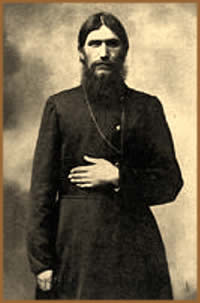
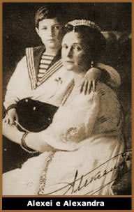
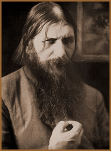

A trajetória de Grigori Yefimovich
Novykhn tem início na década de 1860. Mas há
muitas incertezas em relação ao seu nascimento.
Especula-se que tenha sido em 23 de janeiro de 1864, na pequena
aldeia de Pokrovskoe, Sibéria. Outras fontes afirmam que
o ano de seu nascimento está entre 1869 e 1872.
Pobre e parcialmente alfabetizado,
o jovem Grigori atravessou sua infância e adolescência
na região natal. Provavelmente, ajudando ao pai camponês
nas tarefas diárias, e divertindo-se com mulheres, vodka
e envolvendo-se em brigas com vizinhos. Por este motivo, logo
ganhou o apelido de Rasputinik (Rasputin - equivalente
à Pervertido).
Por
outro lado, sua terra natal era de religiosidade e misticismo
muito intensos. Principalmente porque ali próximo estavam
depositados, numa igreja, os restos mortais de São Simão.
O jovem Rasputin cresceu influenciado por esta atmosfera. Conta-se
que, em sua juventude, já dava alguns sinais de possuir
uma percepção especial, ou capacidade de predizer
fatos futuros. Certa vez, um político chamado Stolypin
passava de carruagem por uma estrada. O jovem Rasputin, que passava
ao lado, acenou e gritou ao viajante: "A morte é
para você. A morte está se aproximando!".
Incrivelmente, no dia seguinte, o político foi ferido por
balas e morreu dias depois.
Aos dezoito anos, Grigori Rasputin
teve um encontro com o bispo de Barnaull. Em seguida, inesperadamente,
passou a interessar-se por religião e decidiu viajar ao
mosteiro de Verkhoture. Foi nesta viagem que entrou em contato
com uma seita conhecida como Khlysty (Flagelantes), a
qual pregava que o ato sexual era uma forma de obter a salvação
espiritual. Sua passagem no mosteiro não foi longa, mas
o fez entrar em contato com os preceitos e a disciplina religiosa.
Pouco tempo depois retorna à
terra natal e casa-se com uma jovem chamada Praskovia Fyodorovna.
Este matrimônio rendeu três filhos ao casal: Dimitri,
Maria e Varvara, nascidos em 1897, 1898 e 1900, respectivamente
(outras fontes especulam quatro filhos do casal). Porém,
o casamento foi breve e Rasputin abandonou o lar. Quando conheceu
um místico conhecido por Makaria, decidiu vagar pelo mundo.
Em suas andanças, visitava preferencialmente, locais de
peregrinação religiosa, como o Monte Athos, Grécia
e Jerusalém. Paralelamente, ao longo de suas caminhadas,
espalhavam-se as lendas de que aquele jovem possuía poderes
especiais e era capaz de curar enfermos e prever o futuro. Mesmo
que, em sua passagem pelo mosteiro de Verkhoture, não tenha
recebido nenhum tipo de treinamento espiritual e tampouco tenha
sido ordenado monge, muitas pessoas, desconhecendo seu passado
conturbado, passaram a considerá-lo um sábio religioso.
Os habitantes das regiões
por onde Rasputin passava, o procuravam em busca de suas bênçãos;
em troca, ofereciam-lhe comida, roupas e dinheiro. Em pouco tempo,
ganhou a condição de "homem santo" e sua
fama disseminou-se nas aldeias da Europa Central. Rasputin contava
que, um dia, arando as terras, recebeu uma revelação
divina. Surgiu-lhe um anjo que entoou um canto místico
e lhe atribuiu a missão espiritual de ajudar os necessitados.
De volta à terra natal,
Rasputin é recebido pelo bispo Theophan e ganha notoriedade
entre os religiosos da região; mas sua presença
também gera desconforto em alguns. O Monge Iliodor era
um de seus opositores. Conta-se que este monge, certa vez, enviou
à casa de Rasputin, uma mulher para seduzi-lo e depois
esfaqueá-lo. Rasputin foi esfaqueado mas sobreviveu.
O Bruxo dos czares
Em 1902, Rasputin desloca-se para a cidade de
São Petersburgo e Kazan, onde agregou alguns discípulos
e criou um grupo místico denominado Polite Society,
baseado nos princípios da Khlysty. Sua imagem de camponês
simples e sem ambição foi significativa para que
conquistasse confiança e simpatia junto aos moradores da
região. A influência que a Polite Society exercia
e o poder de persuasão de Rasputin, amenizavam a fama que
seu envolvimento com prostitutas e bebidas lhe atribuía.
Nesse mesmo momento, as autoridades clericais
da Rússia procuravam por um líder que transitasse
entre a alta classe da sociedade, a nobreza e as classes inferiores,
e pudesse reunir todas sob a influência da Igreja. Rasputin
trazia todas essas características. Mas sua fama junto
aos czares teve início em 1905, quando Anya Vyrubova, amiga
próxima da czarina Alexandra Fedorovna, entrou em coma
após ferir-se gravemente quando o trem em que viajava descarrilou.
Os médicos já haviam perdido a esperança
de curá-la quando Rasputin foi chamado. O místico,
ajoelhado ao lado da cama da vítima, segurou sua mão
e chamou-a pelo nome. Assim continuou por horas seguidas; até
que a vítima, de forma inexplicável, despertou.
Rasputin, com as roupas umedecidas de suor, desmaiou exausto.
Totalmente recuperada, Anya narrava à czarina
as proezas curativas do místico. Quando a doença
de Tsarevich Alexei Romanov se agravava, Rasputin era imediatamente
solicitado e ajoelhava-se ao lado do leito da criança,
por várias horas se necessário, pronunciando em
profusão uma espécie de oração em
um idioma desconhecido e a saúde de Alexei era restabelecida.
Desse
modo, o "bruxo" ganhou confiança e credibilidade
entre os czares. Porém, Nicolas, sentindo-se desconfortável
com a presença de um "monge devasso" em seu palácio
e com o grau de intimidade que ele desfrutava com a czarina Alexandra,
despachou o místico para a Sibéria. Por outro lado,
a czarina, sensibilizada pela doença e pelo sofrimento
do filho hemofílico nascido em 1904, passava a considerar
a hipótese de recorrer novamente a Rasputin pela saúde
da criança, caso fosse necessário.
Numa noite de outubro de 1912, Alexei sofria intensamente
pela dor causada pela hemorragia hemofílica. Desesperada,
a czarina enviou um telegrama solicitando o auxílio de
Rasputin. O místico respondeu imediatamente, dizendo que
Alexei não ia morrer e o sangramento ia cessar. Conta-se
que, assim que o telegrama de Rasputin chegou às mãos
da czarina, Alexei obteve uma melhora súbita. A czarina
Alexandra atribuiu este fato aos poderes de Rasputin, passando
a exigir sua presença constantemente no palácio,
como se a saúde do herdeiro dependesse deste fato. Sensibilizado
e agradecido, o czar Nicolas II não apenas aceitou a presença
de Rasputin no palácio, como passou a respeita-lo como
um "líder extra-oficial", ou um sábio
conselheiro do trono.
Desse modo, o "médico Rasputin"
restabeleceu em si a confiança da alta cúpula russa
e passou a atender também os cidadãos comuns que
almejavam uma consulta, realizando "pequenos milagres"
e promovendo algumas curas prodigiosas. Ao mesmo tempo em que
Rasputin ganhava fama com as mulheres, principalmente da alta
sociedade, conquistava também trânsito livre no palácio
dos Romanov, como um chefe de estado ou um primeiro-ministro.
Por outro lado, a inveja do príncipe Felix Yussupov e de
outros líderes russos, crescia na mesma proporção
que se desenvolvia a influência de Rasputin entre os Romanov.
O Bruxo e a Dinastia
em declínio
Em setembro de 1915, quando as tropas russas estavam
em desvantagem na I Guerra, Nicolas abandonou o trono temporariamente
para liderar o exército. Rasputin já havia manifestado
sua oposição com o fato da Rússia combater
o império Austro-húngaro e alemão. A ausência
do czar no palácio deu mais liberdade a Rasputin, que passou
a influenciar ativamente nas decisões políticas
do país.
Conta-se que certa vez, embriagado, Rasputin declarou
na presença de muitas pessoas que era ele quem mandava
na Rússia e que a czarina estava aos seus pés. Ainda,
Alexandra Fedorovna não era de nacionalidade russa, e sim
austríaca; sendo a Áustria uma das nações
inimigas da Rússia. Isto levou a uma onda de suposições
de que a czarina traía os ideais russos e sua aproximação
com Rasputin, gerou também, boatos sobre uma suposta relação
extra-conjugal da czarina.
Quando Nicolas retornou ao seu país, encontrou
a população faminta e flagelada, a dinastia Romanov,
seu trono e sua hombridade, sob contestação popular.
Rasputin e Alexandra foram considerados pelo povo os maiores responsáveis
por esta situação caótica. Aos olhos do povo,
o místico era quem havia enfeitiçado e ludibriado
os governantes visando apenas conforto social e poder político;
a czarina era a traidora austríaca que levara ao declínio
a nação que a acolheu.
Um paliativo para esta situação
seria eliminar a presença de Rasputin, não apenas
do palácio, mas de toda a Rússia. Desse modo, sem
que Nicolas soubesse, foi engendrado pelos comandantes russos
um meio de assassinar Rasputin. Participaram desta armação,
o príncipe Felix Yussupov, um deputado de extrema-direita
chamado Purishkevitch, o oficial Sukhotin, o médico Lazovert,
e o grão-duque Dmitri, da própria família
real.
O Assassinato
O plano consistia num convite do príncipe
Felix Yussupov ao místico para que o visitasse em sua residência,
sobre o canal do Mojka, um dos condutos que levava ao Rio Neva,
em São Petersburgo. Nesta ocasião seria servido
um jantar a Rasputin. Um dos argumentos era de que a esposa do
príncipe, a bela Irene Alexandrovna, necessitava consultar-se
com o sábio.
Atendendo
ao convite, na noite de 16 de dezembro de 1916, Rasputin foi visitar
Yussupov. O místico foi levado ao porão da mansão,
onde lhe serviram o jantar, sob a alegação de que
Irene logo iria vê-lo. Após uma série de brindes
com vinho envenenado, o bruxo não suportou e caiu sobre
um sofá e deslizou para o chão do aposento. Youssoupov,
vendo Rasputin caído e supondo que estava morto, chamou
os comparsas que aguardavam no andar de cima. Entretanto, mesmo
após uma ingestão incrivelmente alta de veneno,
o místico levantou-se do chão. Youssoupov disparou
duas vezes contra Rasputin; Purishkevitch entrou no aposento e
descarregou sua arma de fogo sobre o corpo do bruxo que ainda
tentou estrangular o príncipe e fugir em seguida. Mas não
suportou e sucumbiu. O corpo imóvel do bruxo foi amarrado
e castrado; em seguida, jogado nas águas frias do Rio Neva,
sendo encontrado três dias depois e enterrado. Em fevereiro
do ano seguinte, o corpo foi exumado e queimado pela multidão.
Dias depois, numa autópsia, o coração de
Rasputin foi retirado e guardado na Academia Militar de Medicina.
Em 1930, o coração sumiu misteriosamente.
Na ocasião de seu assassinato, o veneno
não surtiu o efeito desejado, provavelmente, devido a uma
cirrose que "filtrou" a substância e atenuou seu
efeito no organismo. Na véspera do Natal de 1916, a czarina
prestou-lhe uma homenagem fúnebre. Nos autos legais, o
óbito foi citado como morte acidental.
Ainda, conta-se que Rasputin teria previsto sua
morte e profetizado uma tragédia. Numa carta enviada ao
czar, o bruxo dizia que se Nicolas ou algum de seus familiares
tivesse a intenção de assassiná-lo, nem o
czar nem ninguém de sua família viveria por mais
de dois anos. O fato é que dezenove meses após a
morte do místico, o czar e toda sua família foram
executados por revolucionários bolchevistas.
Rasputin em um século
O homem chamado Grigori Yefimovich Novykhn, que
assumiu, de forma irônica e desafiadora, o apelido pejorativo
que lhe foi dado; foi um camponês que, sem cultura, poder
político ou financeiro, alcançou um dos mais altos
postos do governo russo.
Não é possível afirmar que
realmente possuía "dons especiais" ou era apenas
um hábil hipnotizador. Desde a data exata de seu nascimento,
seu nível de instrução, ascensão e
queda política, e até sua morte, são alvos
de especulações. Mesmo se fosse um místico,
ou um ser espiritualmente elevado, não deixou um tratado
ou um livro referencial. Algumas fontes cogitam que Rasputin possuía
um comportamento rude e pernicioso; mas era extremamente hábil
em suas palavras e argumentos, fato que certamente foi um dos
principais trunfos de sua vida.
Ainda, especula-se que chegou a conhecer pessoalmente
o mago inglês Aleister Crowley (fundador da doutrina Thelema).
Hipóteses menos confiáveis afirmam que o bruxo ainda
vive e teria sido fotografado. Outro fato curioso é que
o pênis de Rasputin, conservado em substâncias químicas,
encontra-se exposto atualmente num museu erótico na cidade
de São Petersburgo. Numa publicação recente,
o livro "Rasputin: a última palavra",
do historiador russo Edvard Radzinski, desmente alguns mitos,
mas reafirma que houve um caso amoroso com Alexandra.
De qualquer forma, toda sua biografia é
repleta de lacunas que dão vazão à divagações
de estudiosos e de meros curiosos. Mas, certamente, são
essas incertezas que fazem de Rasputin um dos personagens mais
intrigantes e misteriosos da história recente da humanidade.
Por
Spectrum